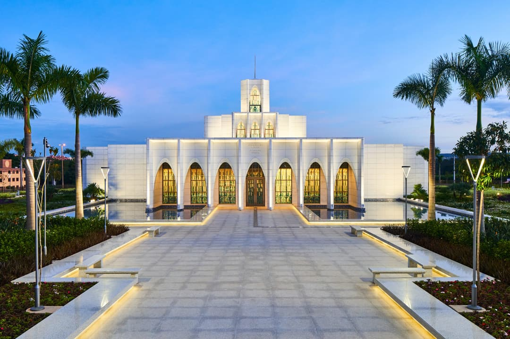
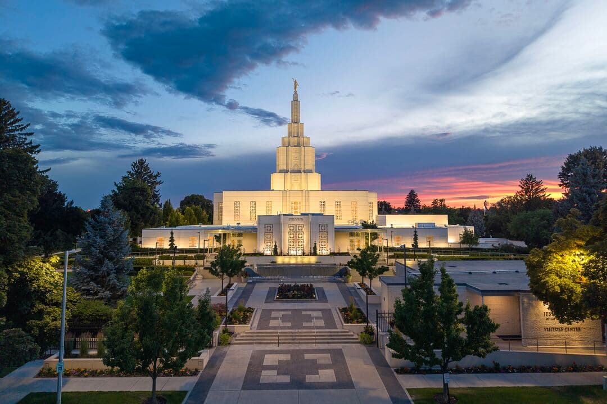
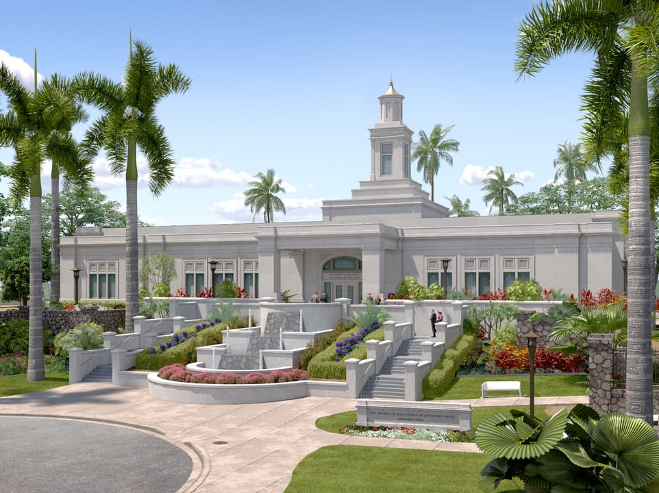
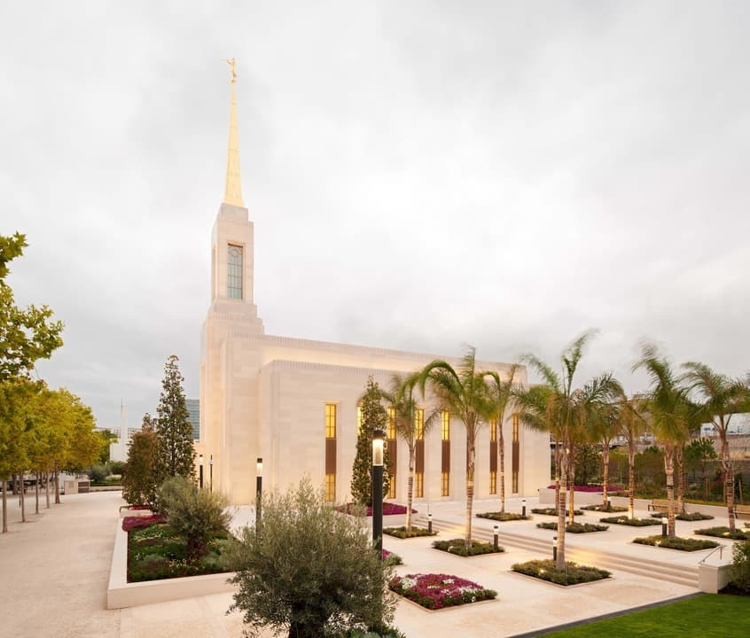
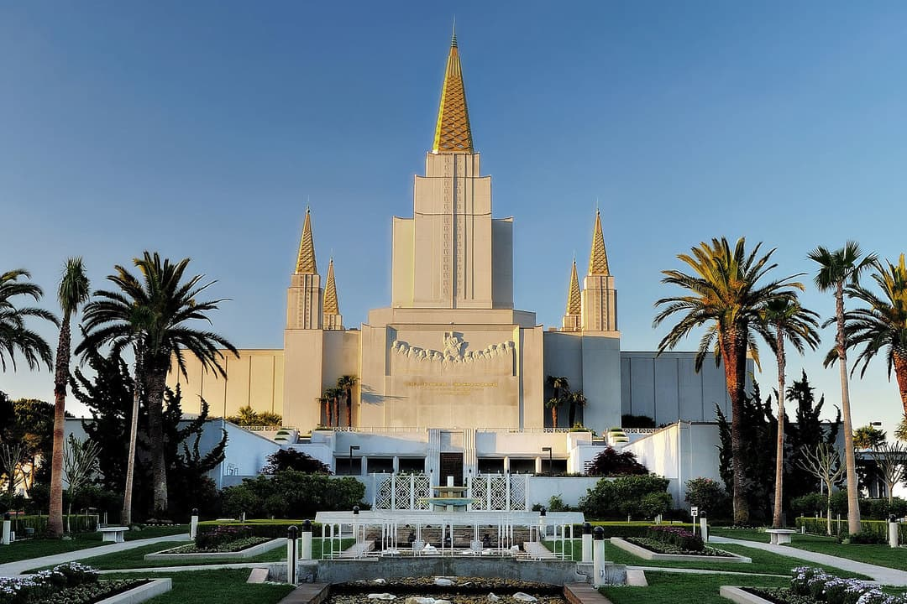
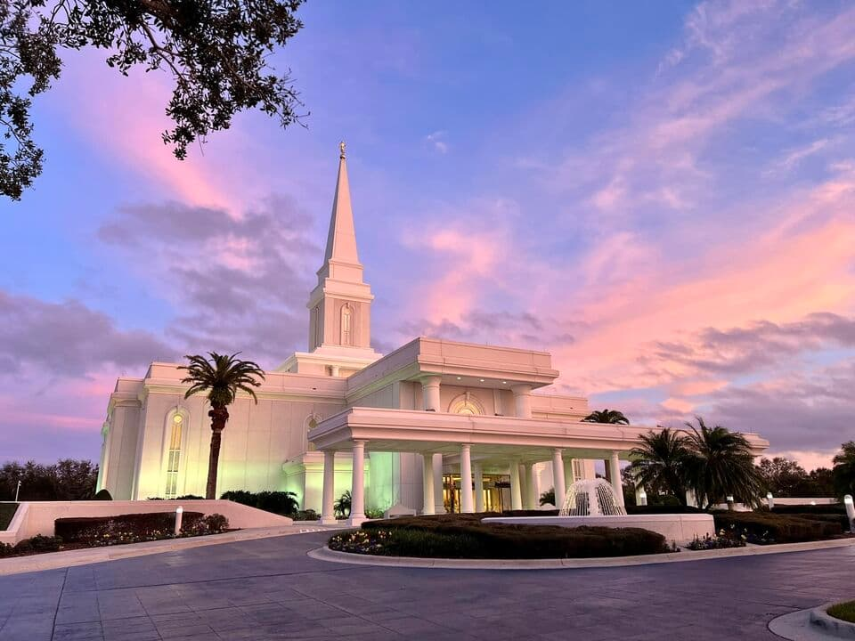
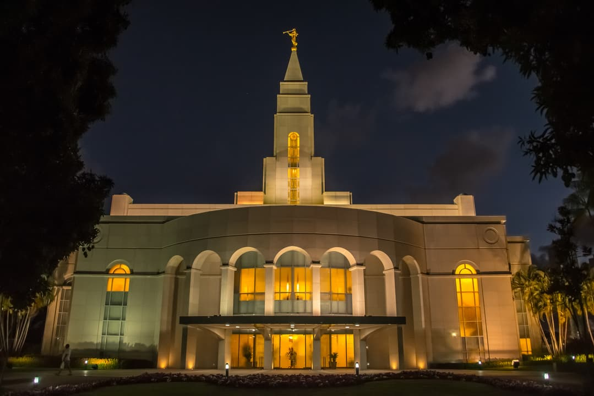

Álbum de Templos

Localização: Brasília, Distrito Federal, Brasil
Dedicado em: 17 de setembro de 2023
Área: 25.000 pés²

Localização: Idaho Falls, Idaho, Estados Unidos
Dedicado em: 23 de setembro de 1945
Área: 116.242 pés²

Localização: Kailua-Kona, Havai, Estados Unidos
Dedicado em: 23 de janeiro de 2000
Área: 10.700 pés²

Localização: Lisboa, Portugal
Dedicado em: 15 de setembro de 2019
Área: 23.730 pés²

Localização: Madrid, Espanha
Dedicado em: 19 de março de 1999
Área: 45.800 pés²

Localização: Oakland, Califórnia, Estados Unidos
Dedicado em: 17 de novembro de 1964
Área: 80.157 pés²

Localização: Orlando, Flórida, Estados Unidos
Dedicado em: 9 de outubro de 1994
Área: 70.000 pés²

Localização: Palmyra, Nova Iorque, Estados Unidos
Dedicado em: 6 de abril de 2000
Área: 10.700 pés²

Localização: Recife, Pernambuco, Brasil
Dedicado em: 15 de dezembro de 2000
Área: 37.200 pés²